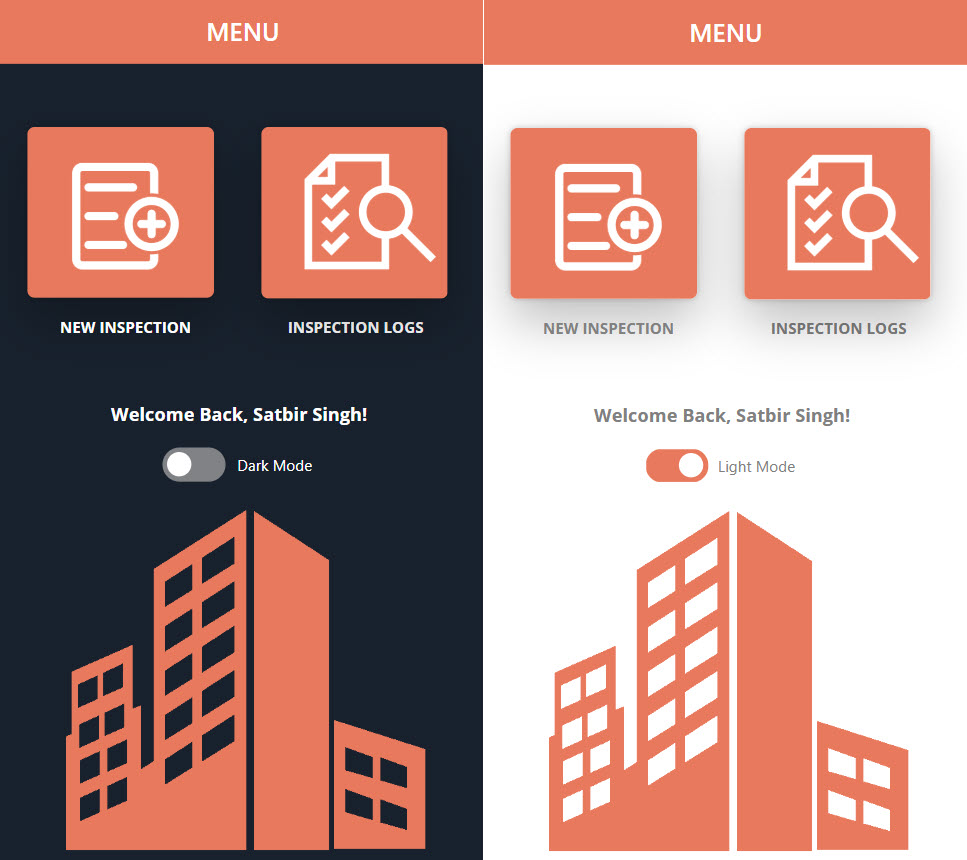
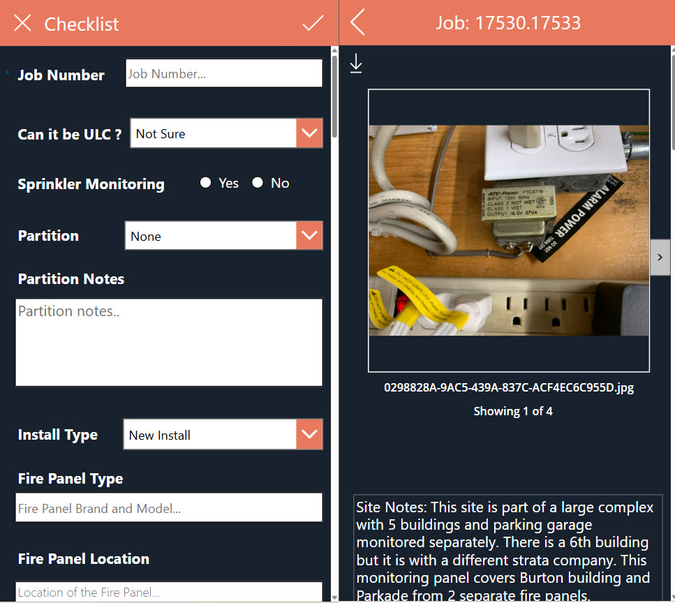

Tech Inspect is a Microsoft Power Platform-based mobile application developed for field technicians to perform site inspections before installation projects begin. The application allows technicians to collect site information, capture photos, and submit detailed inspection reports to the Customer Service and Sales teams. This process helps ensure that projects are quoted accurately and that installation teams have the necessary information before arriving on site.
Data Management
Tech Inspect uses a dedicated SharePoint List as its primary database. Each inspection record stores comprehensive site information, including project details, inspection findings, and attachments such as site photographs. By centralizing all inspection data in SharePoint, the organization can easily access and manage historical records when needed.
User Interface
The application's user interface was designed with simplicity and ease of use in mind, particularly for new employees and technicians who may have limited experience with mobile applications. The home screen presents users with two primary options: creating a new inspection or reviewing previous inspections. This straightforward design minimizes training requirements and enables technicians to quickly access the functionality they need.

Features
Tech Inspect supports both dark mode and light mode, allowing users to work in their preferred display setting. The application also provides access to previously completed inspections, enabling technicians to review historical site information, notes, and photographs before performing an installation. This feature helps technicians understand site conditions in advance and arrive better prepared with the appropriate tools and equipment.

SharePoint Integration
Once an inspection is completed, an automated Power Automate workflow runs in the background. The workflow creates a folder within the SharePoint site using the job number and site name, then stores all site photographs and related files in that location. A document version of the inspection report is generated and emailed to the Customer Service team along with the site photos and a link to the SharePoint folder. This automation ensures that all relevant stakeholders have immediate access to the inspection information and supporting documentation.
Project History
I developed Tech Inspect to reduce errors caused by incomplete or inaccurate communication between Sales, Customer Service, and Field Technicians. Before the application was introduced, important site information was sometimes missed or incorrectly communicated, resulting in inaccurate project quotations and technicians arriving on-site without the proper equipment. Since the deployment of Tech Inspect, the quality and consistency of site information have improved significantly. As a result, quoting accuracy has increased, communication between departments has become more effective, and installation teams are better prepared before arriving at project sites.